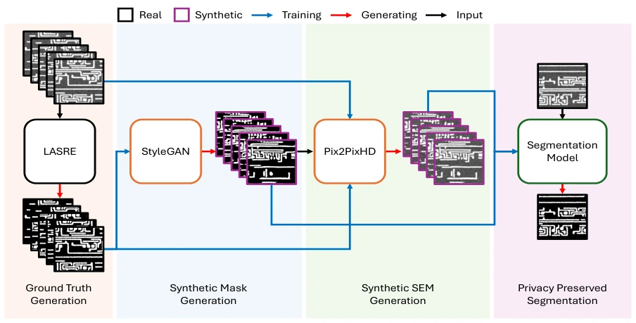
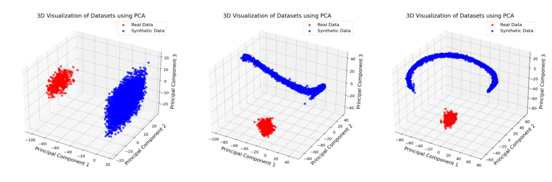
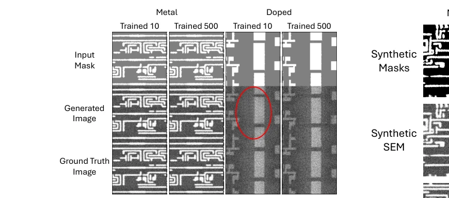
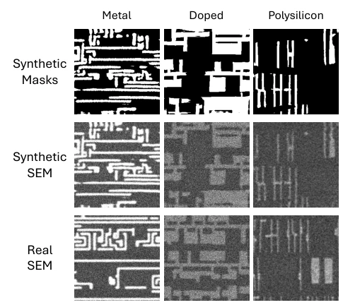
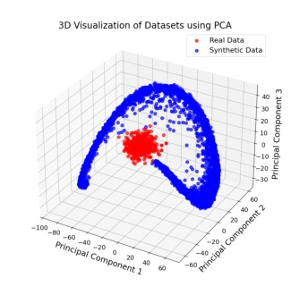

Overcoming Data Scarcity and Confidentiality in Hardware Assurance via Synthetic Generation
Gijung Lee, Ronald Wilson, Damon L. Woodard, Domenic Forte abspdf
论文点评Review
这篇论文给硬件安全领域送来了“特洛伊木马”——用合成数据训练模型，结果模型比用真数据训练的还准，而且还能防住逆向工程。作者用 StyleGAN 和 Pix2PixHD 搞了个“无中生有”的流水线，把几张照片变成五千张假图，居然还能骗过 U-Net 在真图上跑出 0.918 的 IoU，这“模拟到真实”的迁移能力确实有点东西。不过，吐槽一下：这方法目前只跑在一张智能卡 IC 上，且依赖特定的 SEM 成像参数，要是换个芯片厂或者换个显微镜设置，这“魔法”还能不能灵验？另外，虽然 PCA 和分类器证明了分布不同，但“宏观布局不同”是否真能完全杜绝“微观局部”泄露了核心电路逻辑？毕竟如果合成图里刚好拼凑出了个标准单元，那还是有点风险的。总的来说，这是个很实用的“擦边球”方案，但在通用性和理论完备性上还得再打磨。
This paper delivers a "Trojan horse" to the hardware security field—training models with synthetic data results in models that are more accurate than those trained on real data, and can also resist reverse engineering. The authors created a "something from nothing" pipeline using StyleGAN and Pix2PixHD, turning a few photos into 5,000 fake images, which surprisingly enables U-Net to achieve an IoU of 0.918 on real images; this "sim-to-real" transfer capability is indeed impressive. However, a critique: this method currently only runs on one smart card IC and relies on specific SEM imaging parameters; if changing chip manufacturers or microscope settings, can this "magic" still remain effective? Additionally, although PCA and classifiers prove different distributions, does "macro layout difference" truly completely prevent "micro local" leakage of core circuit logic? After all, if standard cells are accidentally pieced together in synthetic images, there is still some risk. Overall, this is a very practical "borderline" solution, but needs further polishing in terms of generality and theoretical completeness.
研究动机Motivation
硬件保障（Hardware Assurance, HA）依赖扫描电子显微镜（SEM）来验证纳米结构，但面临两大死结：一是高质量真实 SEM 数据集稀缺且获取耗时，二是芯片设计包含高度敏感的知识产权（IP），直接共享原始数据或基于原始数据训练的模型极易导致 IP 泄露，甚至引发梯度反演（gradient inversion）或成员推断（membership inference）攻击。现有合成数据方法存在明显短板：IC Mask-GAN [14] 仅能生成金属层掩码，无法覆盖掺杂或多晶硅层；Shape-Consistent Image Translation [15] 虽能生成图像，但仍需真实掩码作为输入，且无法完全脱离真实数据分布。这些方法要么缺乏足够的真实感，要么无法在保护 IP 的前提下实现跨层级的通用生成，导致自动化分析难以规模化。因此，亟需一种既能生成高保真、多物理层级（金属、多晶硅、掺杂）SEM 图像，又能彻底切断与原始设计布局关联的隐私保护生成方案。
Hardware Assurance (HA) relies on Scanning Electron Microscopy (SEM) to verify nanostructures, but faces two major bottlenecks: first, high-quality real SEM datasets are scarce and time-consuming to acquire; second, chip designs contain highly sensitive Intellectual Property (IP), directly sharing raw data or models trained on raw data easily leads to IP leakage, even triggering gradient inversion or membership inference attacks. Existing synthetic data methods have obvious shortcomings: IC Mask-GAN [14] can only generate metal layer masks, unable to cover doping or polysilicon layers; Shape-Consistent Image Translation [15] can generate images, but still requires real masks as input and cannot fully detach from real data distribution. These methods either lack sufficient realism or cannot achieve cross-layer general generation while protecting IP, making automated analysis difficult to scale. Therefore, there is an urgent need for a privacy-preserving generation scheme that can generate high-fidelity, multi-physical layer (metal, polysilicon, doping) SEM images and completely cut off the association with the original design layout.
方法Method
本文提出了一种三阶段隐私保护合成数据生成流水线。第一阶段：利用 StyleGAN 学习真实掩码的分布。使用少量真实 SEM 图像（505张）经 LASRE 算法生成的二进制掩码作为训练集，通过 WGAN-GP 损失函数训练生成器，产出 5000 张宏观结构新颖、无具体路由信息的合成二进制掩码。这一阶段的核心创新在于通过重采样宏观布局，彻底打散原始设计的电气连接逻辑，从源头消除 IP 泄露风险。第二阶段：利用 Pix2PixHD 进行条件图像合成。将第一阶段生成的合成掩码作为输入，训练条件生成对抗网络，将其转换为逼真的 SEM 图像。该网络采用多尺度判别器和特征匹配损失，确保生成的图像保留了真实的纹理、噪声和边缘细节，实现了从“抽象掩码”到“物理图像”的高保真映射。第三阶段：训练分割模型。使用 U-Net 架构，仅利用第二阶段生成的 5000 对合成图像-掩码对进行训练，最终得到一个仅基于合成数据训练的分割模型。该模型被分发给第三方，而原始数据和生成模型保持私有。整个流程通过 PCA 分布分析、成员推断防御测试和实例级隐私分析，验证了合成数据与真实数据在统计分布和实例层面的显著差异，确保了即使模型被攻击，也无法还原出原始 IP。
This paper proposes a three-stage privacy-preserving synthetic data generation pipeline. Stage 1: Utilize StyleGAN to learn the distribution of real masks. Use a small number of real SEM images (505) binary masks generated by LASRE algorithm as training set, train generator via WGAN-GP loss function, produce 5000 synthetic binary masks with novel macro structure and no specific routing information. The core innovation of this stage lies in thoroughly scattering the electrical connection logic of the original design by resampling macro layout, eliminating IP leakage risk from the source. Stage 2: Utilize Pix2PixHD for conditional image synthesis. Use synthetic masks generated in Stage 1 as input, train conditional generative adversarial network to convert them into realistic SEM images. The network adopts multi-scale discriminator and feature matching loss, ensuring generated images retain real texture, noise, and edge details, achieving high-fidelity mapping from "abstract masks" to "physical images". Stage 3: Train segmentation model. Use U-Net architecture, only utilize 5000 synthetic image-mask pairs generated in Stage 2 for training, finally obtain a segmentation model trained solely on synthetic data. This model is distributed to third parties, while raw data and generation model remain private. The entire process verifies significant differences between synthetic and real data in statistical distribution and instance levels through PCA distribution analysis, membership inference defense testing, and instance-level privacy analysis, ensuring that even if the model is attacked, original IP cannot be recovered.

Figure 1. Privacy Preserved pipeline for hardware assurance. GAN models are trained with only real datasets and a segmentation model is trained with only synthetic dataset. Only the trained segmentation model is shared with untrusted third parties.
Experiments were conducted on SEM images of one smart card IC, original dataset contains 505 256x256 images. Baseline model is U-Net trained on 350 real images, comparison model is U-Net trained on 5000 synthetic images. Evaluation metrics include Dice Score, IoU, PSNR, SSIM, and FID. Results show, model trained on synthetic data achieved IoU of 0.918 and Dice Score of 0.957 on real test set, significantly better than baseline model (IoU 0.904, Dice 0.95), even showing better convergence at early training (10 epochs). Ablation experiments show, as training data volume increases from 10 to 500, generator diversity significantly improves (PCA visualization shows from simple clusters to complex manifolds), and FID score drops significantly, proving large data volume is crucial for capturing high-frequency textures. In terms of privacy analysis, PCA shows real and synthetic data distributions completely separated, classifier discrimination accuracy 100%, and instance-level similarity (Dice max 0.5963) far below 1.0, confirming no instance leakage.

Figure 2. 3D PCA visualization for the metal layer comparing the real data distribution (red) with the synthetic data distribution (blue) from models trained on different dataset sizes. (a) The 50-image model produces a simple, dense cluster, indicating limited diversity. (b) The 300-image model marks a turning point, with the synthetic data forming a complex manifold. (c) The 500-image model refines this structure, showing the highest diversity.

Figure 3. Synthetic metal and doped SEM images.

Figure 4. Samples of synthetic datasets. dataset. This divergence is most pronounced in the polysil- icon and doped layer layouts; for instance, the polysili- con model’s FID score drops dramatically from 62.2876 to 35.7038. This demonstrates that while small datasets can capture basic structural alignments, larger datasets are cru- cial for refining complex, high-frequency textures—such as the characteristic SEM noise—and achieving a highly real- istic generative distribution that traditional pixel-wise met- rics fail to evaluate properly. As illustrated by the samples in Figure 4, the generated synthetic images of all different layers exhibit a high degree of visual fidelity and are very similar to the real SEM data, validating our generation pro- cess.

Figure 6. Real vs. synthetic metal layer SEM image distributions.